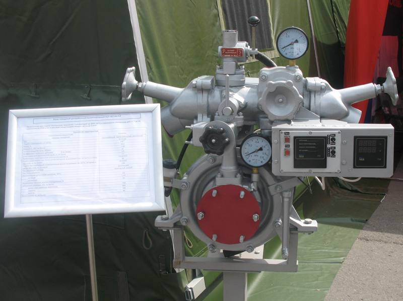
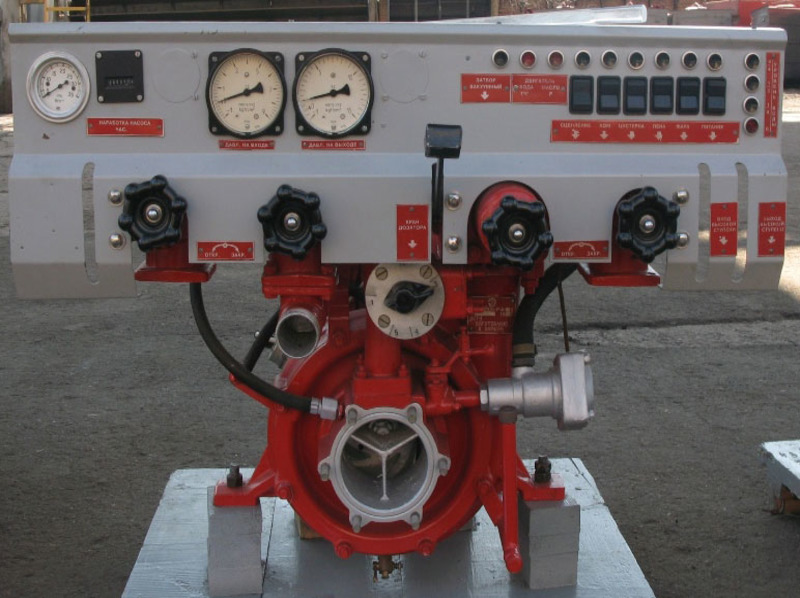
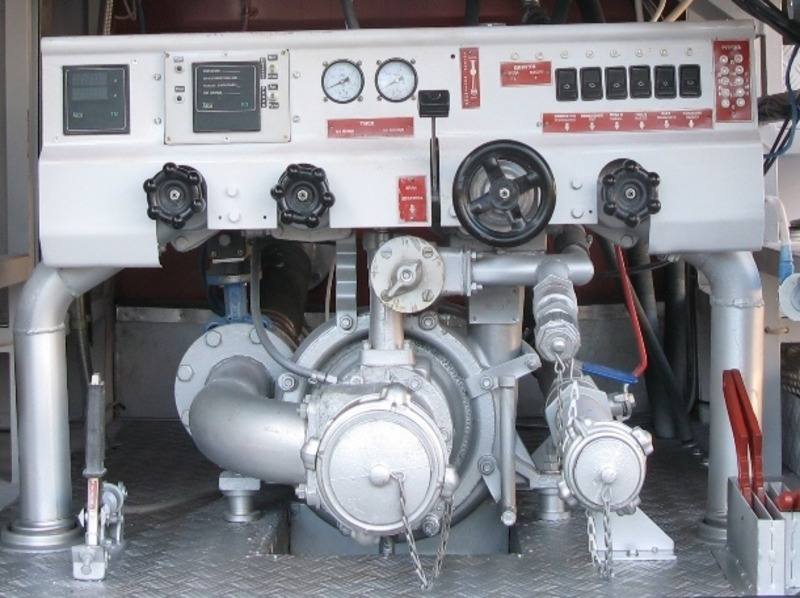
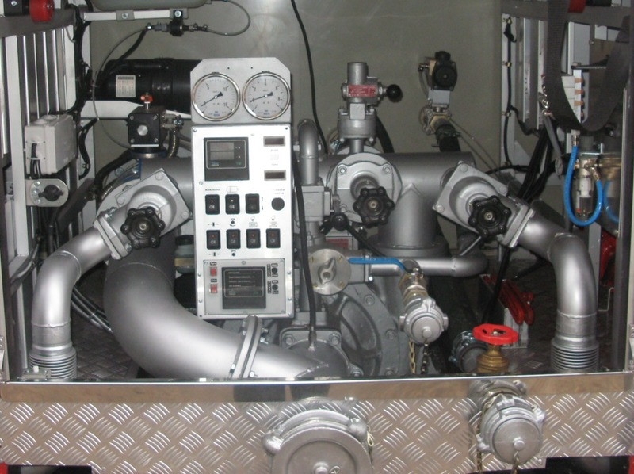

Пожежно-насосна станція – ключовий елемент стаціонарних мереж водяного пожежогасіння. Вона підключена до джерела води: системи водопостачання або резервуару (ємності). Також використовують воду з відкритих природних джерел – водойм. У систему входять труби пожежогасіння, насоси для подачі води до пунктів призначення, аксесуари для трубопроводів, такі як монтажні стики, компенсатори і фланцеві перехідники для монтажу клапанів в мережі разом з клапанними камерами, пожежні гідранти.

НЦП-40/100-Р-Р(НЦП 40.УВ-00-00-00 ПС)

НЦП – 40/100 – Р – Р

НЦПК – 40/100 – 4/400 – Р – Р
